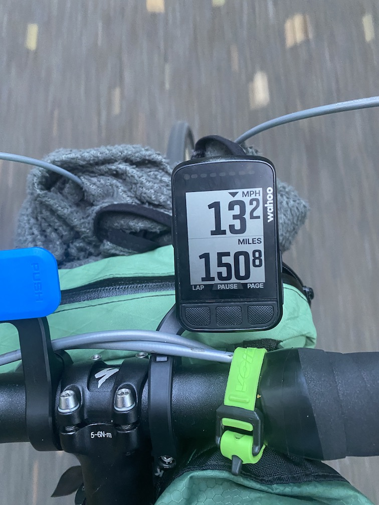
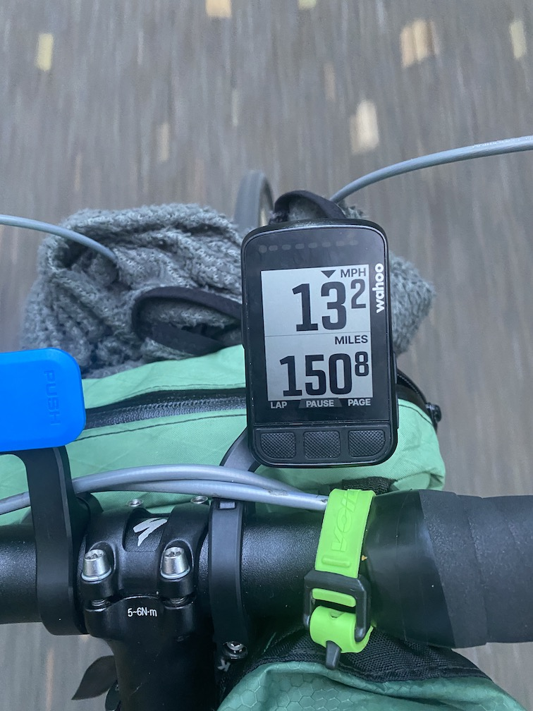
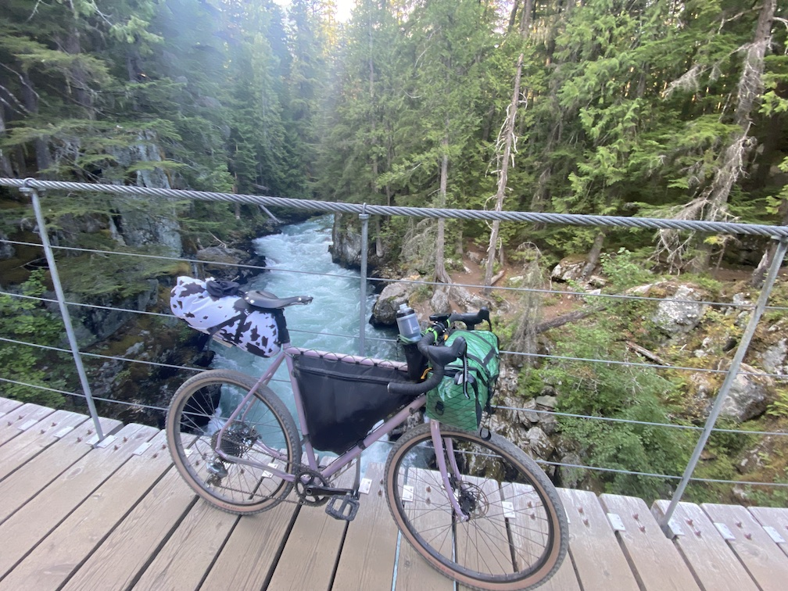
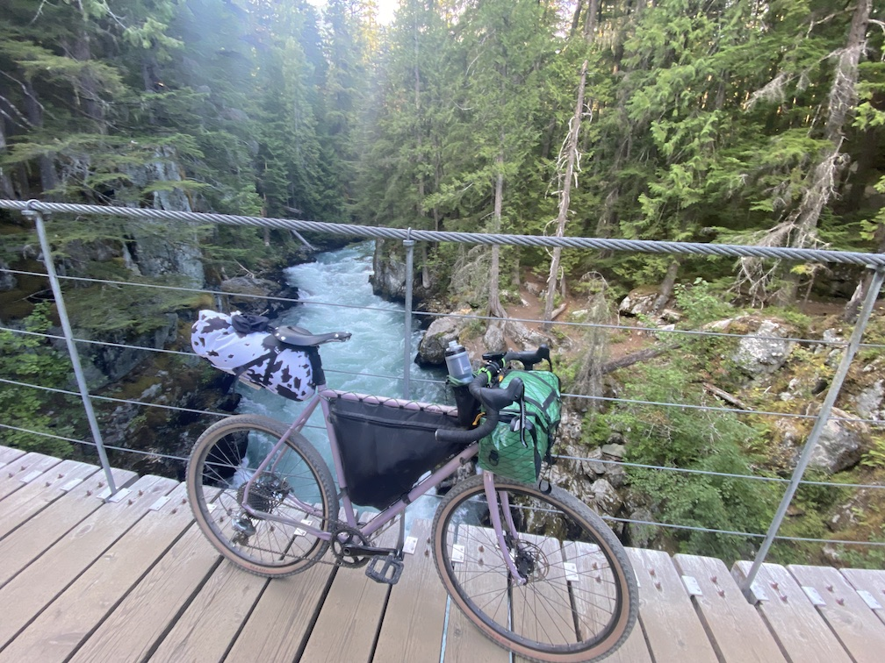
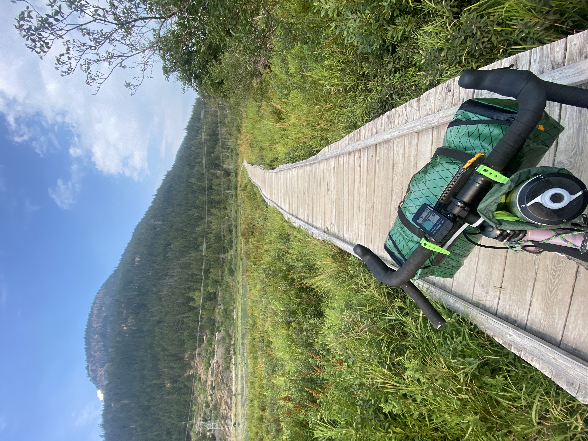
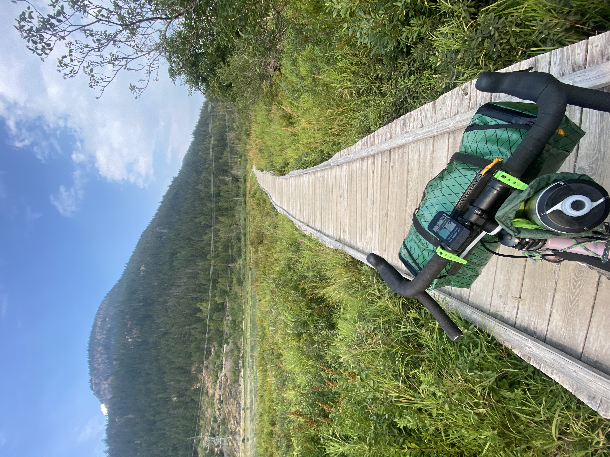
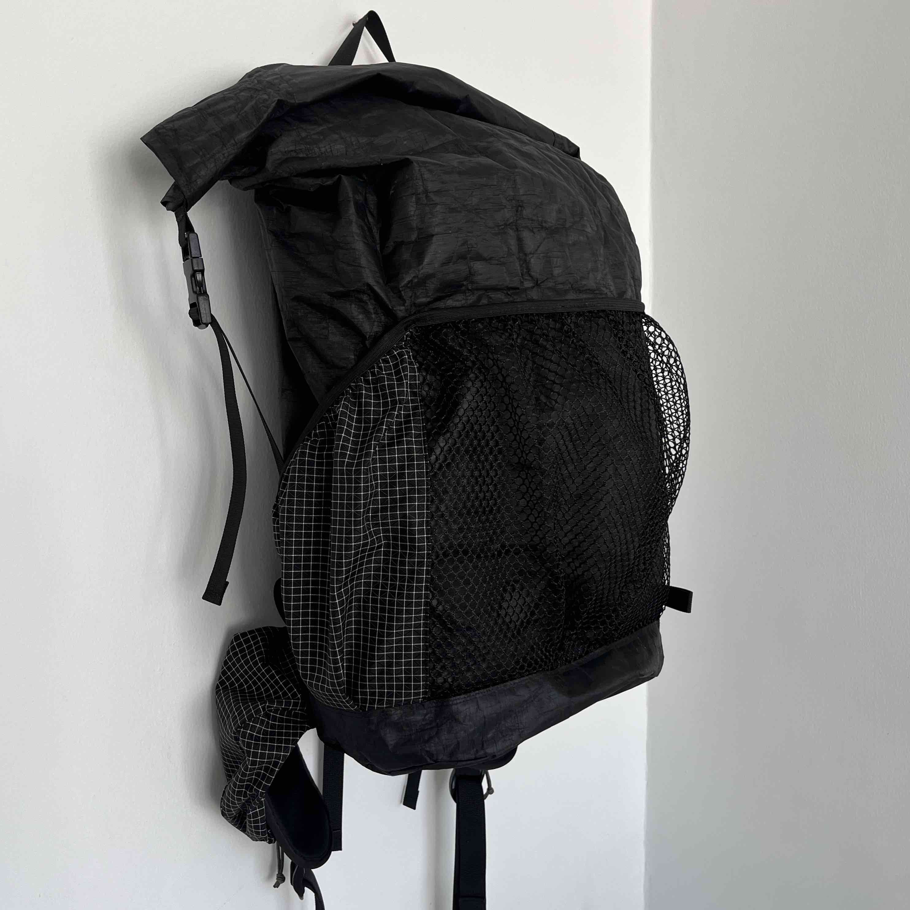
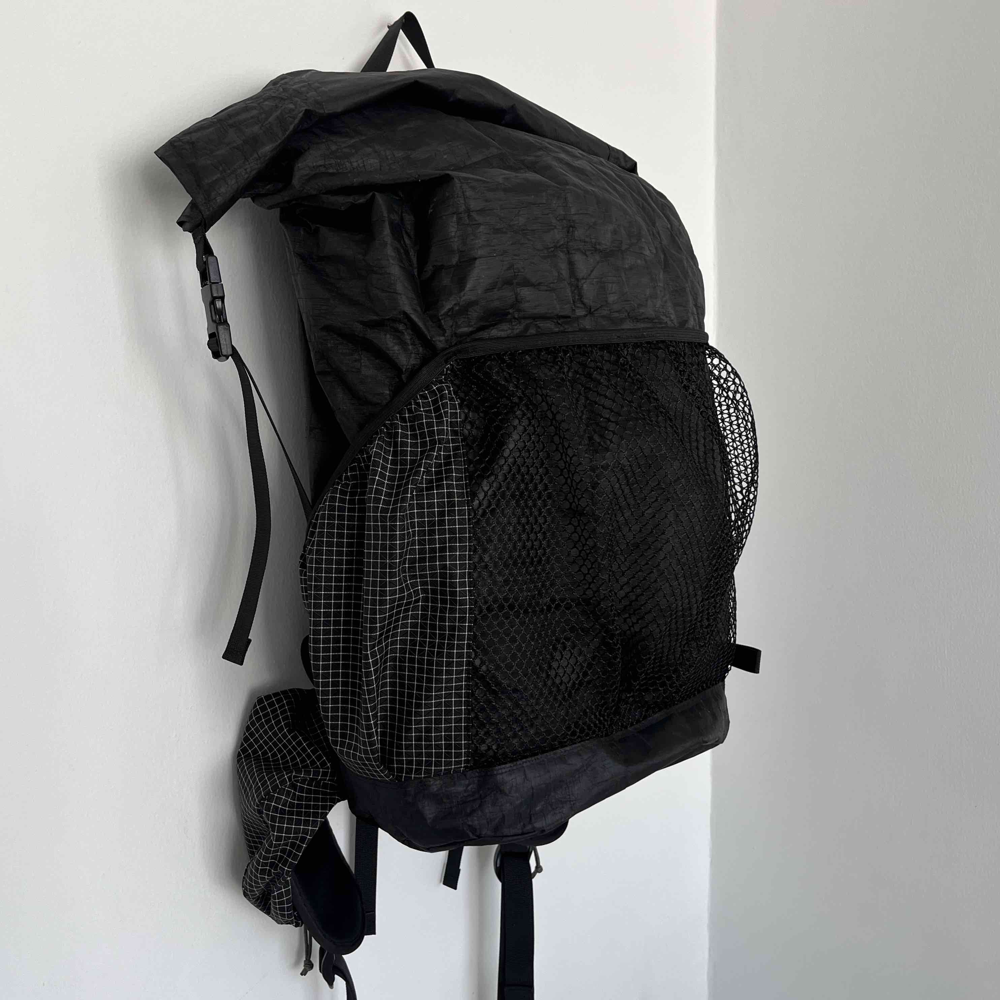
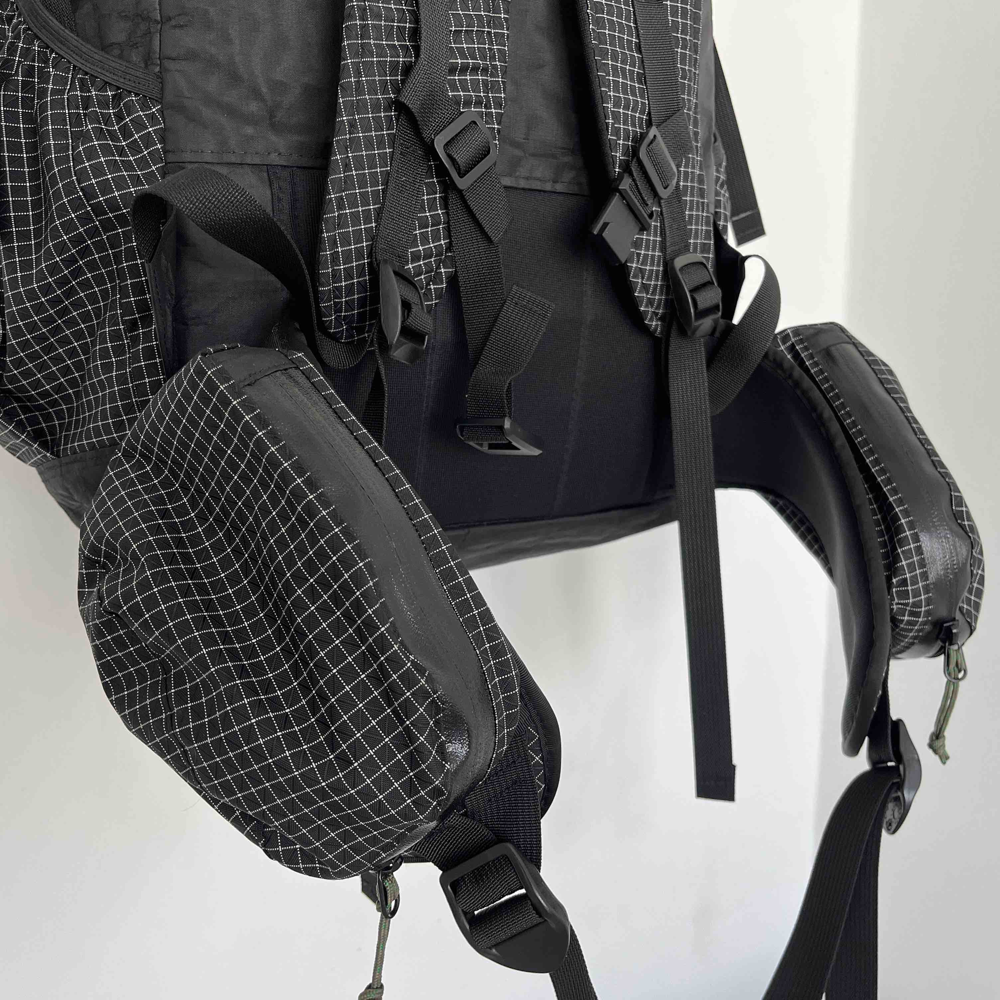
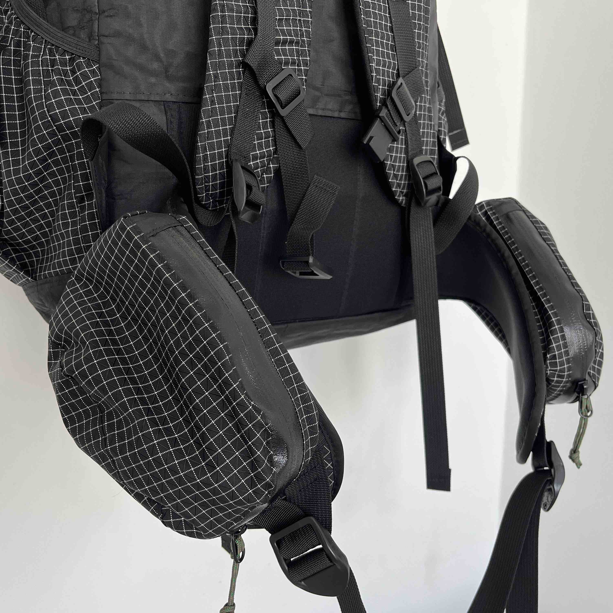

This was my last sewing project of winter 2024: a cross-body, medium capacity cycling bag. The idea was to create a bag that could carry everything necessary for a full day outside the house, but keep it small enough to comfortably wear while biking. I designed it with dedicated internal pockets and maximized external storage though netting and cinch straps. The size and general shape were initially prototyped, with fabric choice, details, and hardware then chosen during the construction process. I have reached the point in gear sewing where I have a substantial amount of leftover fabric, straps, and buckles from previous projects. I wanted to make this bag entirely out of scrap materials to divert these small pieces from the waste stream and as a creative challenge. The final bag turned out close to what I had envisioned. It is slightly less structured than I imagined, which was due to the use of low denier fabrics, but holds its shape well when filled. The bag features a single large enclosure with five internal pockets, a zipper front pocket, two side pockets, shock cord netting on top, bottom cinch straps, U-Lock holster, bike handlebar mounts, shoulder stabilizer strap, and adjustable center buckle Main bag: reclaimed 420D Robic + 5oz + 2.9oz Dyneema Lining: ECOPAK EPX200 Top + Bottom: 210D Dyneema Gridstop
 


 

 

 
 
